コードを表示
# パッケージの読み込み
pacman::p_load(
brms, rstan, rstanarm, loo, tidybayes, tidyverse,
bayesplot, sjPlot, performance)
# プロットのテーマの設定
theme_set(theme_bw())
# 処理の高速化
rstan_options(auto_write = T)
options(mc.cores=parallel::detectCores())こちらのページで紹介されているRのコードはいずれもbrmsパッケージのデフォルトの事前分布を仮定していることにご注意ください。
混合モデルを実装するlme4パッケージでは、引数familyにbinomial (2値ロジスティック回帰 = 目的変数が2値データ)、poisson (ポアソン回帰 = 目的変数がカウントデータ)、Gamma (ガンマ回帰 = 目的変数が自然数となるデータ)、gaussian (線型混合モデル = 目的変数が連続データ) などが含まれています。なお、ポアソン回帰の一種である負の二項分布 (negative binomial distribution) に基づく回帰分析 (混合モデル) の場合には、glmer()関数ではなくglmer.nb()関数を使います。
これらの混合モデルはいずれもlme4やmgcv、gammパッケージなどを使うことで実装することができますが、目的変数が3水準以上のダミーコードとなる場合や順序データ、多変量の分析などの自由なモデリングには対応していません。(もしかしたら今後改善されるかもしれません)
3水準以上のカテゴリカル変数は、例えば、語彙連想課題の分野などで使われます。語彙連想課題とは、目標語から連想される語を書き出す (or 口頭で述べる) という課題で、メンタルレキシコンの構造を検討する際に用いられてきました。例えば、appleから連想される語としてはbanana、fruit、red、pie、Newtonなどがあります。語彙連想課題の分析の際にはこれらの連想語をいくつかのカテゴリーに分けていきます。apple-bananaの関係は同位語、apple-fruitの関係は上位語・下位語、apple-redの関係はシンタグマティック (コロケーション・統語)、apple-Newtonの関係はfree associationとなります。このようなカテゴリーの間には順序関係がありません。そのため、「正解・不正解」「成功・失敗」のような2値データと同じダミーコードが付与されます。
2024年現在、lme4パッケージのfamilyではこのmultinomialのデータを分析することができません。
lme4パッケージで分析することができないデータの2つ目は順序データです。順序データの典型例はアンケートなどのリッカートスケールです。アンケートの結果は因子分析などでまとめられてしまうことが多いですが、例えば、生徒のスピーチを5段階で評価するなどのデータでは有用です。パフォーマンス評価を行う際には、評価者と受験者をファセットとした多層ラッシュモデルで分析することもできます。多相ラッシュモデルは評価者の厳しさや受験者の能力を含めたモデリングであり、現在のデータを説明することが目的です。一方、順序ロジスティック回帰では、未来のデータを予測することが目的となります。例えば、受験者の授業中の様子からスピーチの評価を予測するなどが挙げられます。
lme4パッケージのfamilyではこのordinal logistic regressionは実装できません。ランダム効果も含めたcumulative link mixed effect modelの場合はclmmパッケージを使うことができます。
MANOVAのように目的変数が複数ある場合、lme4パッケージでは混合効果を含めたMANOVAを実装することができません。例えば、recallとrecognitionの語彙テストで得られた正解・不正解のデータはrecallで1つの2値ロジスティック回帰、recognitionで1つの2値ロジスティック回帰という具合に、2つのGLMMでモデルが作成されます。
上記のように、lme4パッケージで分析することができないデータはbrmsパッケージを使うことで全て解決可能です。brmsパッケージはベイズ推定を行うためのパッケージです。以下ではベイズアプローチに基づく回帰分析について簡単に紹介します。
ベイズアプローチとは、物事について、どれくらい知っているのか、あるいは知らないのかを、確率で表現するものです。例えば、明日が雨なのか晴れなのかよくわからないという場合でも、「よくわからない」ではなく、「雨が降る確率は40%くらいだろうか」と確率を使って定量的に評価することが試みられます。
ベイズアプローチはベイズの定理に基づき、事前確率を事後確率に更新します。事前確率とは、データが得られる前に想定された確率のことで、データが得られた後に想定する確率です。例えば、先行研究で得られている効果量を事前確率とし、手元のデータに当てはめてパラメータの推定値やデータの予測値を得ることができます。
事前確率を事後確率に更新する際には尤度と周辺尤度の比を使います。尤度とはパラメータが所与であるという条件における、標本が得られる確率のことで、条件付き確率として表現されます。一方で周辺尤度とはデータが得られる平均的な確率です。例えば、語彙テストにおいて、ある単語の意味を正しく回答できるかどうかの確率は正解か不正解かで50%であると想定されます。ただし、appleやorangeのように具体的な語彙は75%の確率で正解し、amazingやdoubtfulのような抽象的な語彙の正解率は50%であることが先行研究で示されているとします。この状況を数式としてまとめると、以下のようになります。
これらの確率を使い、ベイズの定理に基づくと、事前確率を事後確率に更新することができます。ベイズの定理は以下のように表されます。
\[ P(H_1|D) = \frac{P(D|H1)P(H_1)}{P(D)} \]
このベイズの定理を用いた事前確率から事後確率への更新はベイズ更新と呼ばれています。語彙テストの例を続けると、学習者が語彙テストに正解した後に想定する「テスト項目が具象語であると想定する確率」、すなわち事後確率は以下のように計算されます。
\[ Posterior Probability = P(H_1|D) = P(H_1) × \frac{P(D|H_1)}{P(D)} = 0.5 × \frac{0.75}{0.625} = 0.5 × 1.2 = 0.6 \]
このベイズ更新を用いて確率を更新していくことにより、パラメータや予測結果の不確実性が確率で定量化されます。パラメータは確率分布として扱うことができることから、データが得られる前に想定される確率分布は事前分布、データが得られた後に想定される確率分布は事後分布と呼ばれます。この事後分布に従う乱数を小さいものから順番に並べ、2.5%点から97.5%点に該当する範囲を調べることで95%ベイズ信用区間を得ることができます。つまり、95%Credible Interval (CrI) はNull Hypothesis Significant Testingにおける95%Confidence Interval (CI) と異なり、95%の確率で母集団のパラメータを推定することが可能です。
ベイズ推定について紹介するため紹介するため、ポアソン回帰分析を例としてコードを見ていきましょう。
# パッケージの読み込み
pacman::p_load(
brms, rstan, rstanarm, loo, tidybayes, tidyverse,
bayesplot, sjPlot, performance)
# プロットのテーマの設定
theme_set(theme_bw())
# 処理の高速化
rstan_options(auto_write = T)
options(mc.cores=parallel::detectCores())パッケージとして主に用いるのはbrmsとなります。brmsはBayesian Regression Models using ‘Stan’ のことを指しています。Stanとは、ベイズ推定で必要となるMCMCサンプリングを行うプログラムのことです。デフォルトで4,000回のコンパイルがあるため、処理を高速化する必要があります。
続いては分析用のデータを確認していきましょう。
# ポアソン回帰
data(epilepsy) # データの読み込み
head(epilepsy) Age Base Trt patient visit count obs zAge zBase
1 31 11 0 1 1 5 1 0.4249950 -0.7571728
2 30 11 0 2 1 3 2 0.2652835 -0.7571728
3 25 6 0 3 1 2 3 -0.5332740 -0.9444033
4 36 8 0 4 1 4 4 1.2235525 -0.8695111
5 22 66 0 5 1 7 5 -1.0124085 1.3023626
6 29 27 0 6 1 5 6 0.1055720 -0.1580352ggplot(epilepsy, aes(x = count)) +
geom_histogram(binwidth = 1, fill = "blue", alpha = 0.7) +
facet_grid(. ~ Trt) +
theme_bw()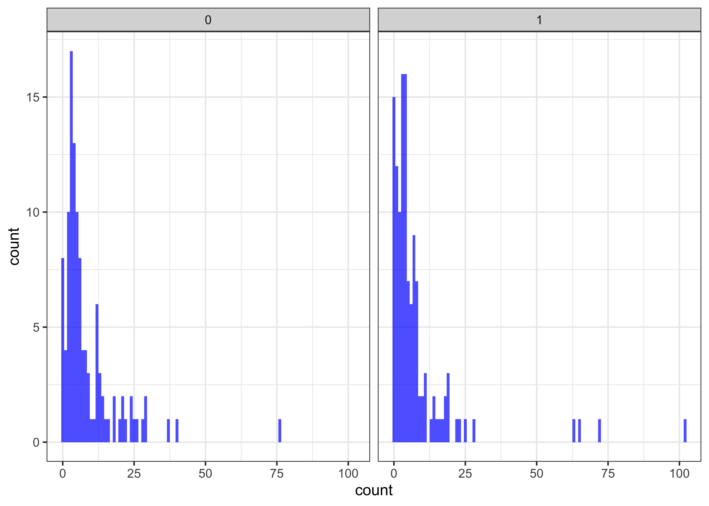
データはbrmsパッケージに含まれているepilepsyデータでてんかんにおける抗けいれん薬治療のランダム化試験における発作回数を検討します。目的変数はcount、説明変数はz変換されたAge (zAge)、zBaseとTrtの交互作用となります。

brmsパッケージのbrm関数の記述方法はlme4パッケージと同じように使うことができます。ポアソン回帰分析を実行するにはfamilyにpoissonを用いることとなります。
brm関数の引数にはチェーンの数やバーンインの回数などがありますが、今回は何も指定せずにデフォルトを使用しています。デフォルトではチェーン数は4、iterationは2000、バーンインは1000、thiningは1となっています。また、事前分布としてはget_prior関数を使うと確認することができます。
# ポアソン回帰の実行
fit1 <- brm(count ~ zAge + zBase * Trt + (1|patient),
data = epilepsy, family = poisson())
# 結果の表示
summary(fit1, prob = 0.95)
tab_model(fit1)| count | ||
|---|---|---|
| Predictors | Incidence Rate Ratios | CI (95%) |
| Intercept | 5.91 | 4.70 – 7.49 |
| zAge | 1.10 | 0.93 – 1.32 |
| zBase | 2.03 | 1.61 – 2.60 |
| Trt: Trt1 | 0.76 | 0.55 – 1.05 |
| zBase:Trt1 | 1.05 | 0.76 – 1.45 |
| Random Effects | ||
| σ2 | -159.01 | |
| τ00 | 295.05 | |
| ICC | -1.19 | |
| N patient | 59 | |
| Observations | 236 | |
| Marginal R2 / Conditional R2 | 0.703 / 0.829 | |
plot(conditional_effects(fit1), ask = F)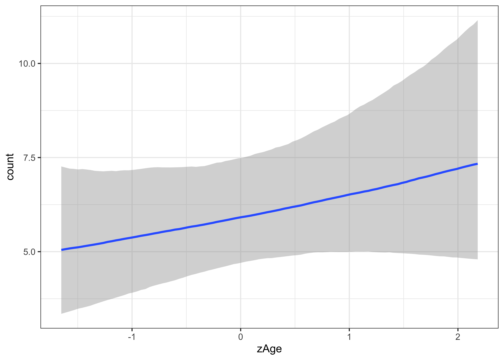
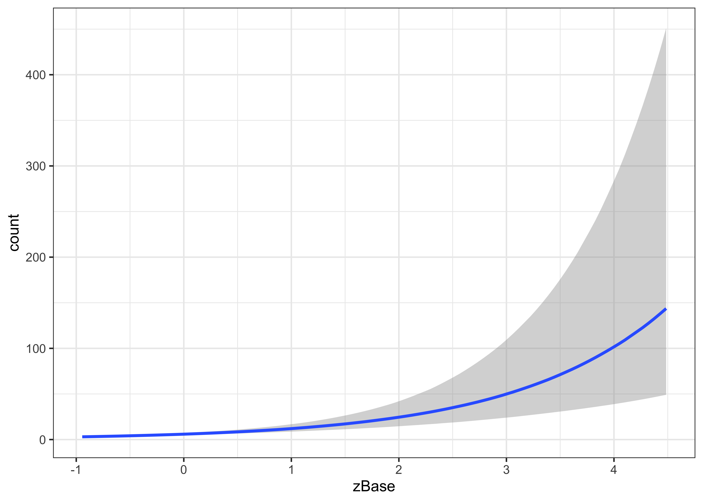
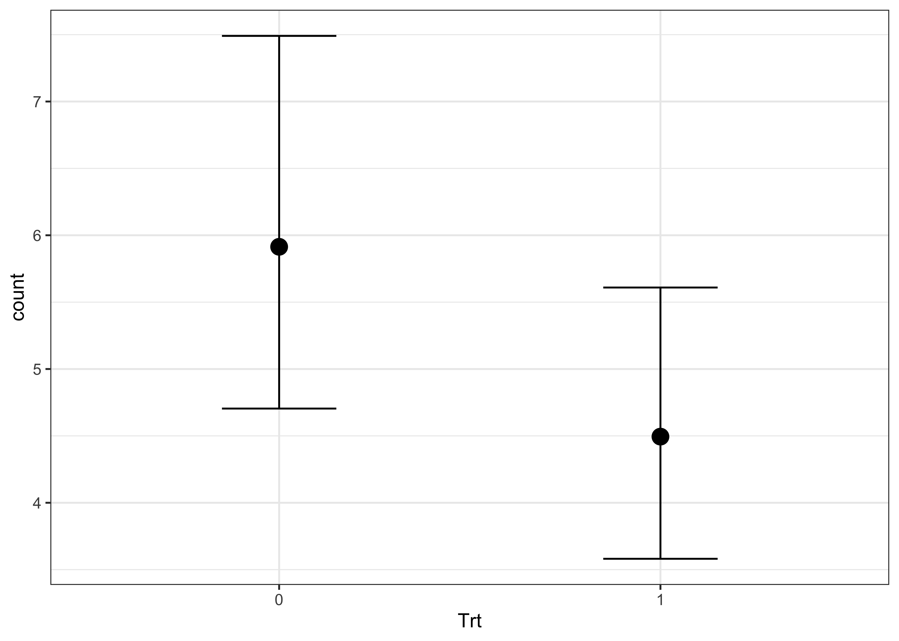
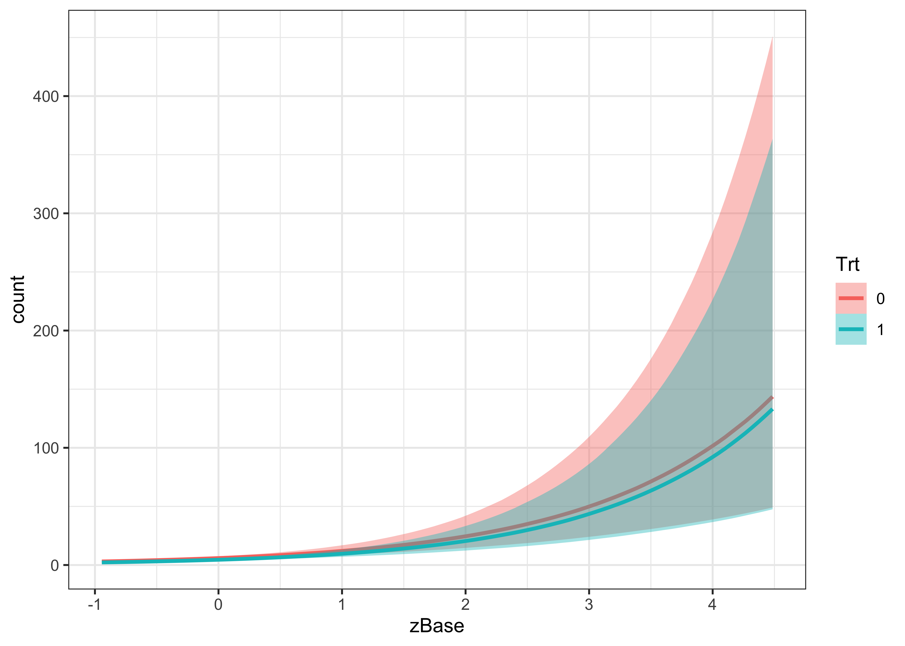
summary関数の結果には推定値などが示されています。重要な指標の解釈は以下の通りです。
summary(fit1, prob = 0.95) Family: poisson
Links: mu = log
Formula: count ~ zAge + zBase * Trt + (1 | patient)
Data: epilepsy (Number of observations: 236)
Draws: 4 chains, each with iter = 2000; warmup = 1000; thin = 1;
total post-warmup draws = 4000
Multilevel Hyperparameters:
~patient (Number of levels: 59)
Estimate Est.Error l-95% CI u-95% CI Rhat Bulk_ESS Tail_ESS
sd(Intercept) 0.58 0.07 0.46 0.73 1.00 878 1799
Regression Coefficients:
Estimate Est.Error l-95% CI u-95% CI Rhat Bulk_ESS Tail_ESS
Intercept 1.78 0.12 1.55 2.01 1.01 623 1353
zAge 0.10 0.09 -0.07 0.28 1.01 724 1267
zBase 0.71 0.12 0.47 0.96 1.01 701 1402
Trt1 -0.27 0.17 -0.60 0.05 1.01 650 1147
zBase:Trt1 0.04 0.17 -0.28 0.37 1.00 757 1481
Draws were sampled using sampling(NUTS). For each parameter, Bulk_ESS
and Tail_ESS are effective sample size measures, and Rhat is the potential
scale reduction factor on split chains (at convergence, Rhat = 1).tab_model関数の出力結果は、summary関数のEstimateがIRRへと指数変換されています。そのため、95%CIに1が含まれている際には実質的な差が見られないと解釈できます。そのため、zAgeの主効果、zBaseとTrtの交互作用、Trtの主効果は発生率に影響を与えていないと言えます。onditional_effects関数とplot関数を使うと予測プロットを描画することができます。
tab_model(fit1)| count | ||
|---|---|---|
| Predictors | Incidence Rate Ratios | CI (95%) |
| Intercept | 5.91 | 4.70 – 7.49 |
| zAge | 1.10 | 0.93 – 1.32 |
| zBase | 2.03 | 1.61 – 2.60 |
| Trt: Trt1 | 0.76 | 0.55 – 1.05 |
| zBase:Trt1 | 1.05 | 0.76 – 1.45 |
| Random Effects | ||
| σ2 | -161.54 | |
| τ00 | 297.26 | |
| ICC | -1.20 | |
| N patient | 59 | |
| Observations | 236 | |
| Marginal R2 / Conditional R2 | 0.703 / 0.829 | |
トレースプロットはベイズ推定で用いられるMCMCサンプルの安定性を各パラメータごとに可視化しています。b_で始まるパラメータは固定効果、sd_で始まるパラメータはランダム効果の推定結果となります。iterationが1〜4であり、それぞれが安定しているかを視覚的に捉えることができます。今回は比較的安定しているように思われます。
plot(fit1, combo = c("trace", "dens_overlay"), ask = F)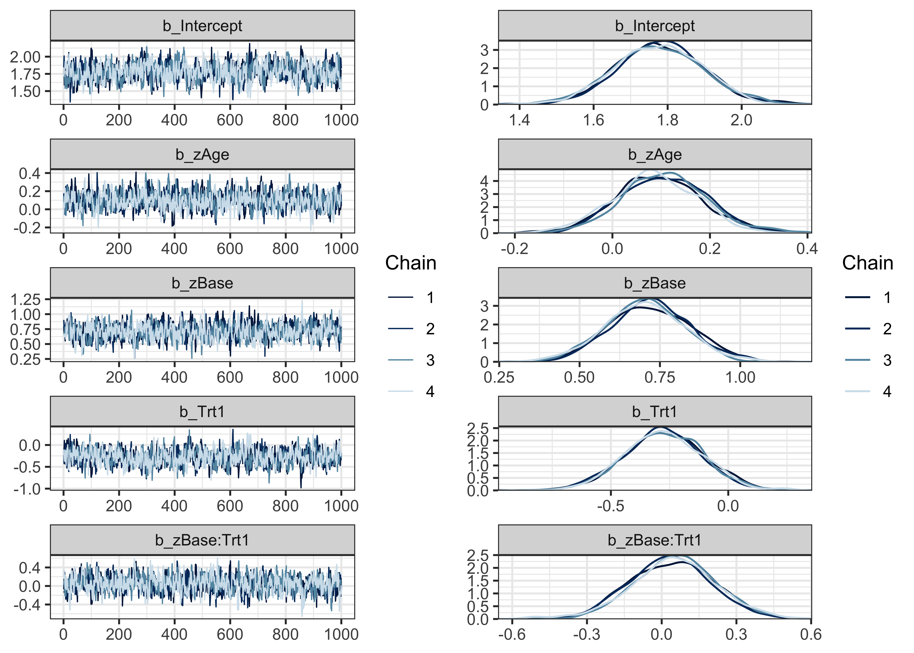
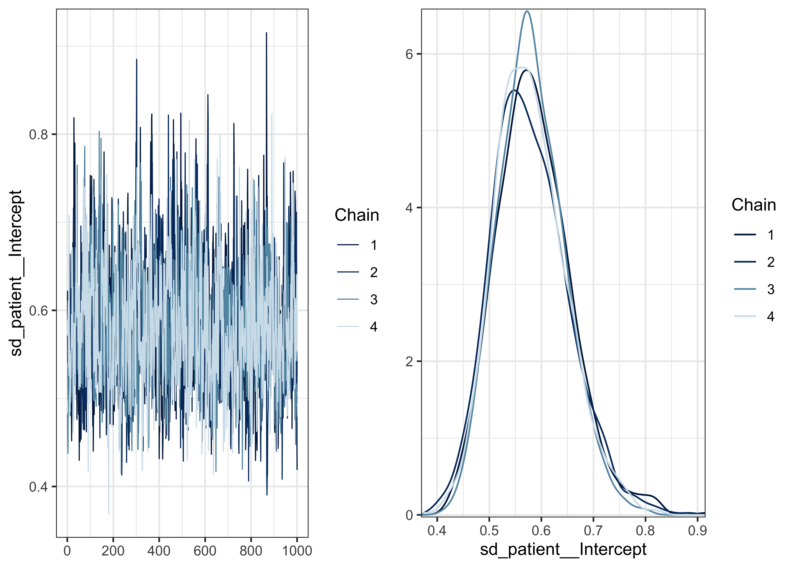
モデルの予測について、事後分布を確認することができます。左側がヒストグラム、右側が確率密度で目的変数の事後分布をプロットしています。Bulk ESS、Tail ESSで700〜1400のシミュレーションの平均に基づくと、目的変数は8.0〜8.5あたりになるようです。左側のヒストグラムの\(T(y)\) はシミュレーションの最小値となり、ヒストグラムの山と重なっていることから、実際のデータとシミュレーションの結果が一致していることを表しています。
# モデルの予測の確認
pp_check(object = fit1, ndraws = 1000, type = "stat", stat = "mean") +
theme_test() + ylab("Frequency")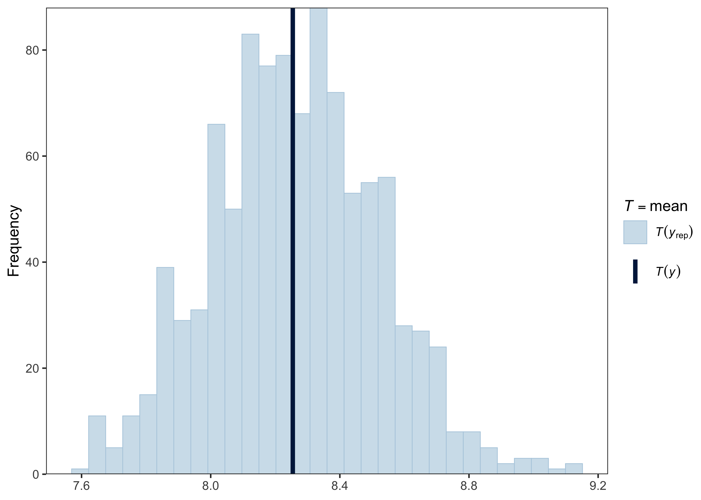
pp_check(object = fit1, ndraws = 100) +
theme_test() + ylab("Density")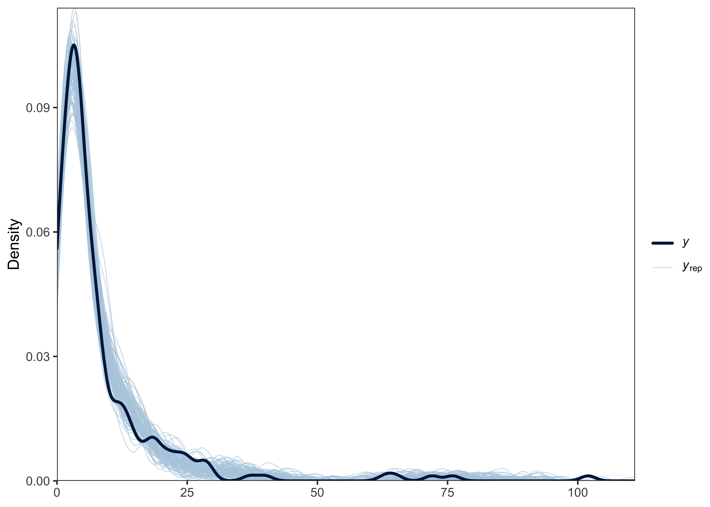
モデルの適合度は以下の通りです。回帰モデルの適合度を計算する際には、観測値と回帰直線の残差を使うこととなります。この残差を用いると、モデルの決定係数 (\(R^2 = 1 - 残差標準誤差\)) を計算することや、逸脱度 (パラメータが所与の目的変数の確率密度を対数変換し、-2をかけたもの) を計算することができます。逸脱度は低いほどモデルの当てはまりがよくなります。
逸脱度では、確率密度を対数変換を行なっています。確率密度は掛け合わせるものですが、対数変換をすることにより確率を足し合わせることができるようになります。 leave-one-out (LOO) cross validationを用いたLOO残差を対数変換したexpected log predictive density (ELPD) は、小さいほどモデルの当てはまりがよいとされます。また、事前情報を組み込んだモデルを用いるとか学習は防がれます。このモデルを比較する際には、ELPDやLOOIC、WAICなどを用います。LOOICはELPD_LOOに-2をかけたものであり、高いほど当てはまりが良いと言えます。WAICはAICと同じように低いほど当てはまりが良いと言えます。WAICはモデルの予測尤度の対数を計算し、これらの値の平均を取ります。
model_performance(fit1)# Indices of model performance
ELPD | ELPD_SE | LOOIC | LOOIC_SE | WAIC | R2 | R2 (marg.)
------------------------------------------------------------------------
-671.187 | 36.162 | 1342.374 | 72.324 | 1337.344 | 0.829 | 0.703
ELPD | RMSE | Sigma | Score_log | Score_spherical
------------------------------------------------------
-671.187 | 4.946 | 0.000 | -Inf | 0.017事前分布はget_prior関数を使うと確認することができます。
get_prior(count ~ zAge + zBase * Trt + (1|patient),
data = epilepsy) prior class coef group resp dpar nlpar lb ub
(flat) b
(flat) b Trt1
(flat) b zAge
(flat) b zBase
(flat) b zBase:Trt1
student_t(3, 4, 4.4) Intercept
student_t(3, 0, 4.4) sd 0
student_t(3, 0, 4.4) sd patient 0
student_t(3, 0, 4.4) sd Intercept patient 0
student_t(3, 0, 4.4) sigma 0
source
default
(vectorized)
(vectorized)
(vectorized)
(vectorized)
default
default
(vectorized)
(vectorized)
defaultflatは無情報分布と呼ばれるものです。多くの場合、平均0、分散100の正規分布のような平らな分布となります。こちらはclassがbのパラメータ (固定効果) に対して用いられています。
事前分布は先行研究でどのようなパラメータが用いられているかを踏まえて推定されます。例えば、身長はマイナスの値にはならないなど、分析者の専門知識を活用することが必要となります。基本的にはデフォルトの事前分布を用いて良いかと思います。
stancode(fit1)// generated with brms 2.22.0
functions {
}
data {
int<lower=1> N; // total number of observations
array[N] int Y; // response variable
int<lower=1> K; // number of population-level effects
matrix[N, K] X; // population-level design matrix
int<lower=1> Kc; // number of population-level effects after centering
// data for group-level effects of ID 1
int<lower=1> N_1; // number of grouping levels
int<lower=1> M_1; // number of coefficients per level
array[N] int<lower=1> J_1; // grouping indicator per observation
// group-level predictor values
vector[N] Z_1_1;
int prior_only; // should the likelihood be ignored?
}
transformed data {
matrix[N, Kc] Xc; // centered version of X without an intercept
vector[Kc] means_X; // column means of X before centering
for (i in 2:K) {
means_X[i - 1] = mean(X[, i]);
Xc[, i - 1] = X[, i] - means_X[i - 1];
}
}
parameters {
vector[Kc] b; // regression coefficients
real Intercept; // temporary intercept for centered predictors
vector<lower=0>[M_1] sd_1; // group-level standard deviations
array[M_1] vector[N_1] z_1; // standardized group-level effects
}
transformed parameters {
vector[N_1] r_1_1; // actual group-level effects
real lprior = 0; // prior contributions to the log posterior
r_1_1 = (sd_1[1] * (z_1[1]));
lprior += student_t_lpdf(Intercept | 3, 1.4, 2.5);
lprior += student_t_lpdf(sd_1 | 3, 0, 2.5)
- 1 * student_t_lccdf(0 | 3, 0, 2.5);
}
model {
// likelihood including constants
if (!prior_only) {
// initialize linear predictor term
vector[N] mu = rep_vector(0.0, N);
mu += Intercept;
for (n in 1:N) {
// add more terms to the linear predictor
mu[n] += r_1_1[J_1[n]] * Z_1_1[n];
}
target += poisson_log_glm_lpmf(Y | Xc, mu, b);
}
// priors including constants
target += lprior;
target += std_normal_lpdf(z_1[1]);
}
generated quantities {
// actual population-level intercept
real b_Intercept = Intercept - dot_product(means_X, b);
}目的変数が順序尺度 (例：とてもそう思う・そう思う・どちらでもない・あまりそう思わない・全くそう思わない) の場合、順序ロジスティック回帰分析を用いることとなります。なお、順序ロジスティック回帰には累積ロジスティック回帰分析と隣接ロジスティック回帰分析の2種類があります。
目的変数が2値のロジスティック回帰分析では「成功の確率」と「失敗の確率」を比較するものでした。目的変数が順序尺度の場合、5件法のアンケートを例とすると、1の確率と2以上の確率の比較、2以下の確率と3以上の確率の比較、3以下の確率と4以上の確率の比較、4以下の確率と5の確率の比較を行なっています。つまり、累積ロジスティック回帰は目的変数が複数の順序尺度を2つの比較へと縮小していると言えます。一方、隣接ロジスティック回帰は、1の確率と2の確率の比較、2の確率と3の確率の比較、3の確率と4の確率の比較、4の確率と5の確率の比較などを行います。
それでは具体例で見ていきましょう。
# パッケージの読み込み
library(brms)
library(rstan)
library(rstanarm)
library(loo)
library(tidybayes)
library(tidyverse)
library(bayesplot)
library(sjPlot)
library(performance)
# プロットのテーマの設定
theme_set(theme_bw())
# 処理の高速化
rstan_options(auto_write = T)
options(mc.cores=parallel::detectCores())
library(ordinal) # wineデータの読み込みのためのパッケージ
data(wine) # データの読み込み
head(wine) response rating temp contact bottle judge
1 36 2 cold no 1 1
2 48 3 cold no 2 1
3 47 3 cold yes 3 1
4 67 4 cold yes 4 1
5 77 4 warm no 5 1
6 60 4 warm no 6 1ggplot(wine, aes(x = rating, y = response, fill = temp)) +
geom_boxplot()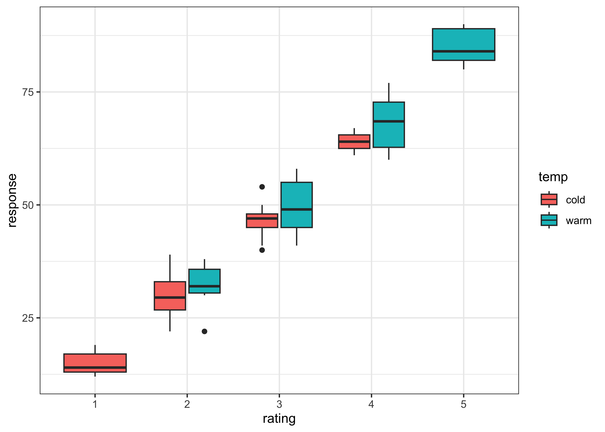
今回使用するデータはordinalパッケージに含まれるワインの苦味を5段階で評定するwineというデータです。9人の審査員が2本ずつワインをテイスティングし、5段階で苦味を報告しています。この評定にワインを作成する際の温度 (2水準：warm vs. cold)、果汁と果皮の接触 (2水準：Yes vs. No) が影響するかを検討します。
プロットを見てみると、warmの場合は2〜5が多く、coldの場合は1〜4が多いように思われます。また、ratingは1が少なく、5が最もおおいようです。
それではbrmsパッケージを使って累積ロジスティック回帰分析を実行してみます。familyにcumulativeを設定しています。なお、link = “logit” の部分はリンク関数を明示しており、省略可能です。
# 順序ロジスティック回帰の実行
fit2 <- brm(rating ~ temp + contact + (1|judge),
data = wine, family = cumulative(link = "logit"))
# 結果の表示
summary(fit2, prob = 0.95)
tab_model(fit2)| rating | ||
|---|---|---|
| Predictors | Odds Ratios | CI (95%) |
| Intercept[1] | 0.19 | 0.04 – 0.77 |
| Intercept[2] | 4.39 | 1.26 – 16.82 |
| Intercept[3] | 62.91 | 13.58 – 394.51 |
| Intercept[4] | 410.86 | 68.22 – 3544.59 |
| temp: warm | 21.54 | 6.91 – 69.44 |
| contact: yes | 6.22 | 2.40 – 18.05 |
| Random Effects | ||
| σ2 | 0.15 | |
| τ00 | 1.01 | |
| ICC | 0.13 | |
| N judge | 9 | |
| Observations | 72 | |
| Marginal R2 / Conditional R2 | 0.397 / 0.550 | |
plot_model(fit2,
type = "pred",
terms = c("temp", "contact"))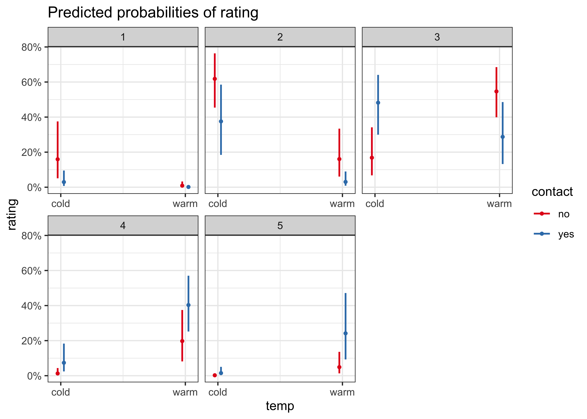
plot(conditional_effects(fit2), ask = F)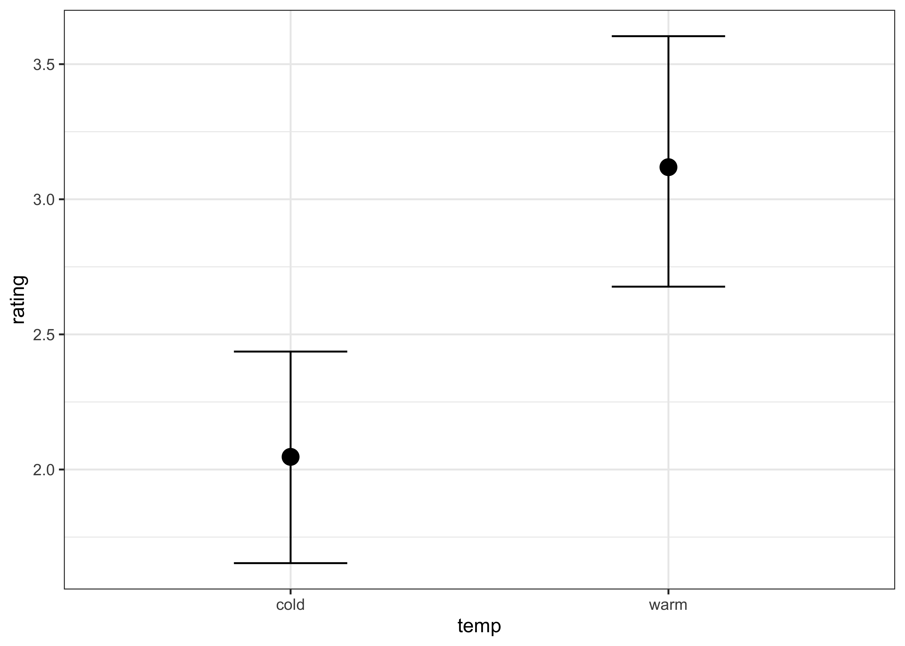
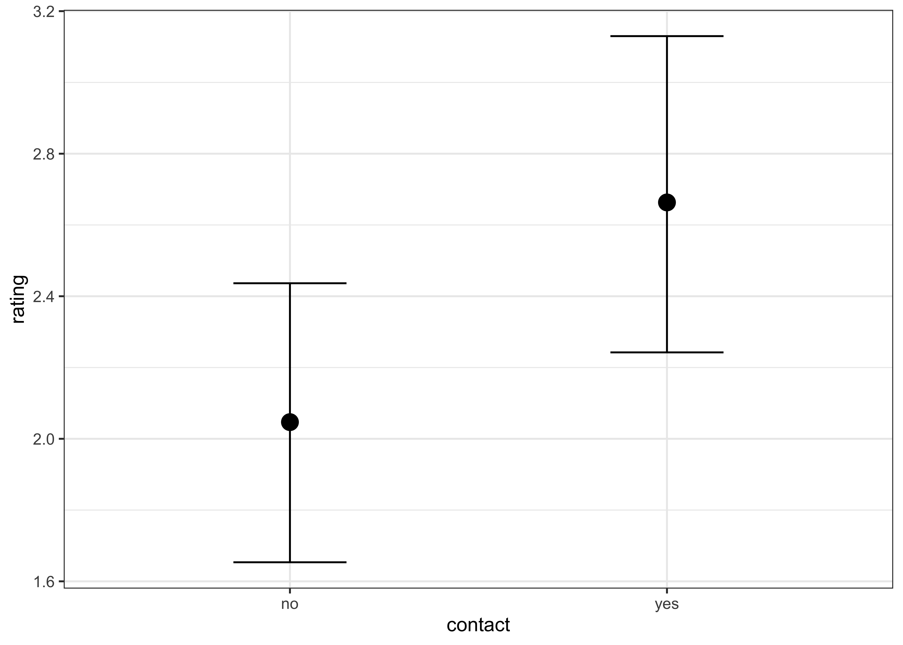
ポアソン回帰ではEstimateが対数変換されていないIncidence Rate Ratios (IRR) でした。ロジスティック回帰分析絵は対数変換されているオッズ比 (Odds Ratio: OR) であるロジットが表示されています。ロジットが0であることは基準と比べて差がないことを表しています。
ロジットの95%CIを確認すると、tempは0が含まれていないため、ratingに影響を与えているようです。ベースラインはcoldであるため、coldに比べてwarmは高く評定されるようにあります。また、contactはNoに比べ、Yesの方が高く評定されるようです。
tab_model関数の出力結果は指数変換されており、ロジットがオッズ比へと変換されています。そのため、CIに1.00が含まれているとベースラインと比べて差がないことを意味しています。今回はtempもcontactも影響を与えているようです。この結果はplot_model関数の結果を確認すると視覚的に分かります。
summary(fit2, prob = 0.95) Family: cumulative
Links: mu = logit; disc = identity
Formula: rating ~ temp + contact + (1 | judge)
Data: wine (Number of observations: 72)
Draws: 4 chains, each with iter = 2000; warmup = 1000; thin = 1;
total post-warmup draws = 4000
Multilevel Hyperparameters:
~judge (Number of levels: 9)
Estimate Est.Error l-95% CI u-95% CI Rhat Bulk_ESS Tail_ESS
sd(Intercept) 1.39 0.53 0.61 2.68 1.00 1098 2035
Regression Coefficients:
Estimate Est.Error l-95% CI u-95% CI Rhat Bulk_ESS Tail_ESS
Intercept[1] -1.68 0.75 -3.22 -0.26 1.00 1668 2387
Intercept[2] 1.48 0.66 0.23 2.82 1.00 1897 2264
Intercept[3] 4.17 0.84 2.61 5.98 1.00 1750 2127
Intercept[4] 6.07 1.00 4.22 8.17 1.00 1891 2304
tempwarm 3.07 0.59 1.93 4.24 1.00 2437 2940
contactyes 1.84 0.51 0.87 2.89 1.00 2793 3058
Further Distributional Parameters:
Estimate Est.Error l-95% CI u-95% CI Rhat Bulk_ESS Tail_ESS
disc 1.00 0.00 1.00 1.00 NA NA NA
Draws were sampled using sampling(NUTS). For each parameter, Bulk_ESS
and Tail_ESS are effective sample size measures, and Rhat is the potential
scale reduction factor on split chains (at convergence, Rhat = 1).tab_model(fit2)| rating | ||
|---|---|---|
| Predictors | Odds Ratios | CI (95%) |
| Intercept[1] | 0.19 | 0.04 – 0.77 |
| Intercept[2] | 4.39 | 1.26 – 16.82 |
| Intercept[3] | 62.91 | 13.58 – 394.51 |
| Intercept[4] | 410.86 | 68.22 – 3544.59 |
| temp: warm | 21.54 | 6.91 – 69.44 |
| contact: yes | 6.22 | 2.40 – 18.05 |
| Random Effects | ||
| σ2 | 0.16 | |
| τ00 | 1.00 | |
| ICC | 0.14 | |
| N judge | 9 | |
| Observations | 72 | |
| Marginal R2 / Conditional R2 | 0.397 / 0.550 | |
1と評定する左上のプロットはwarmよりもcoldの方が多く、contactがyesよりnoの方が多いようです。この傾向は逆に、5の評定をみると逆転しています。つまり、tempがwarmであると評定が高くなり、contactがyesであると評定が高くなる傾向が見られます。
予測モデルでは分かりにくい場合、以下のコードを使ってみましょう。
plot(conditional_effects(fit2), ask = F)
conditional_effects関数を使うとratingがwarmおよびyesであると高くなることがわかります。
plot_model(fit2)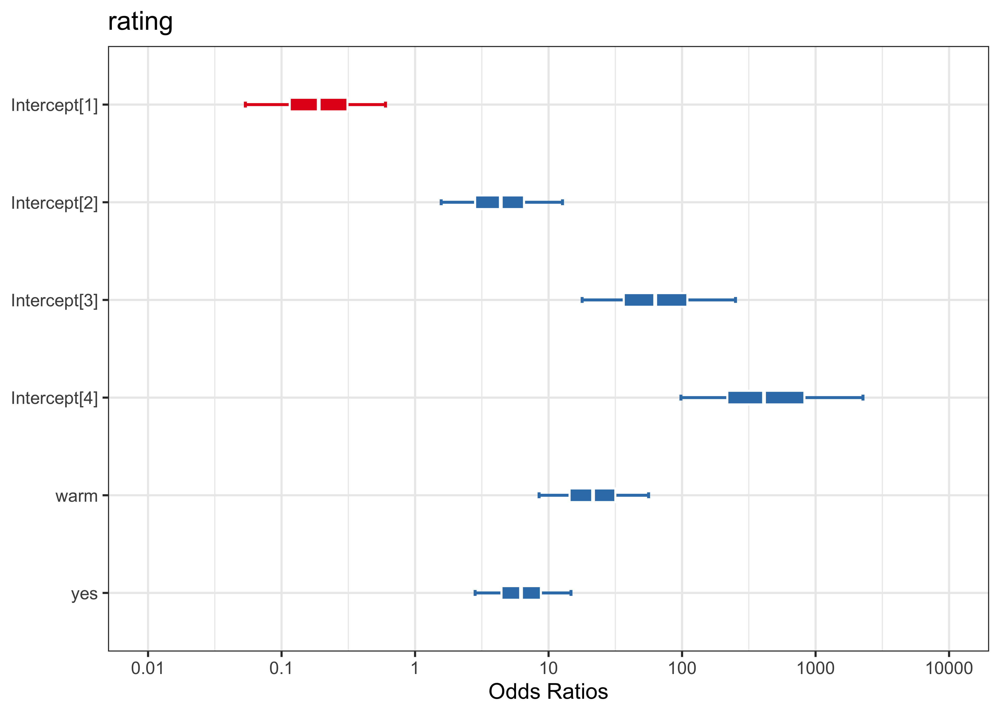
こちらは予測プロットを作成する際のtypeとtermsを削除したsjPlotパッケージのplot_model関数で、フォレストプロットを作成するものです。x軸には効果量であるオッズ比を示しており、Interceptとの比較が示されています。それぞれの比較の解釈は以下の通りです。
それぞれオッズ比が1よりも小さい場合には赤、1より大きい場合には青で示されます。95%CIが1を跨いでいると目的変数に影響を与えないという解釈となります。
それではトレースプロットやモデル指標などを確認し、これらの結果が信頼できるものか確認してみましょう。
# トレースプロット
plot(fit2, combo = c("trace", "dens_overlay"), ask = F)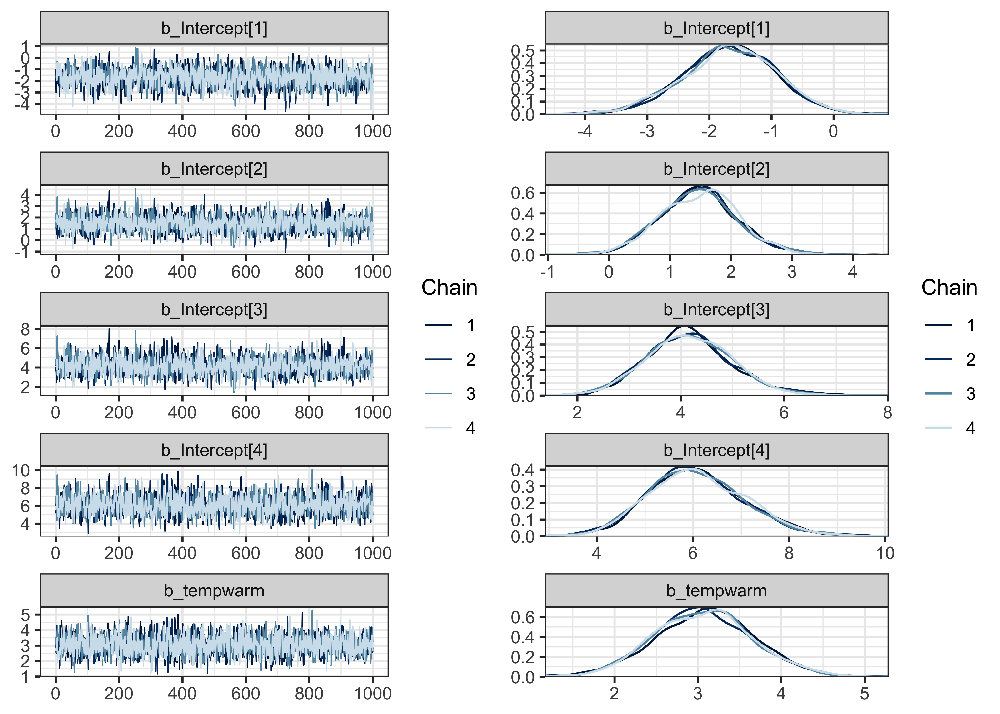
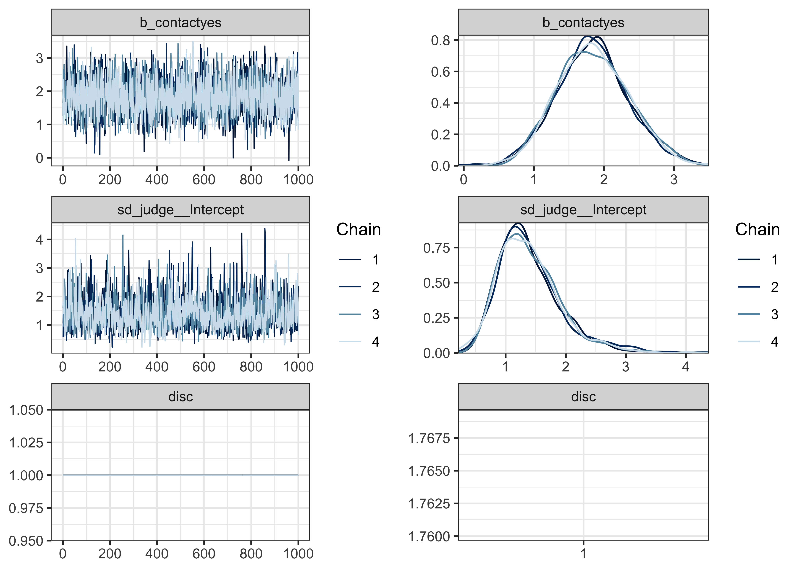
# モデルの予測の確認
pp_check(object = fit2, ndraws = 1000, type = "stat", stat = "mean") +
theme_test() + ylab("Frequency")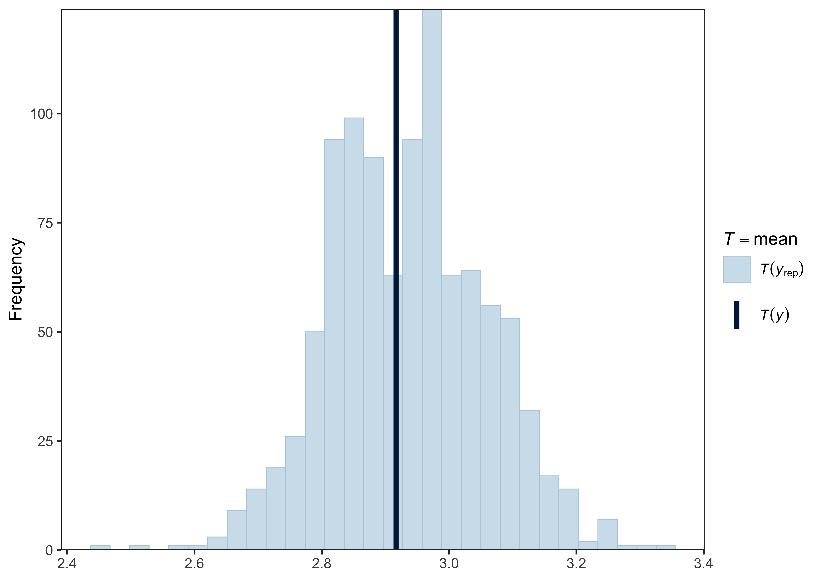
pp_check(object = fit2, ndraws = 100) +
theme_test() + ylab("Density")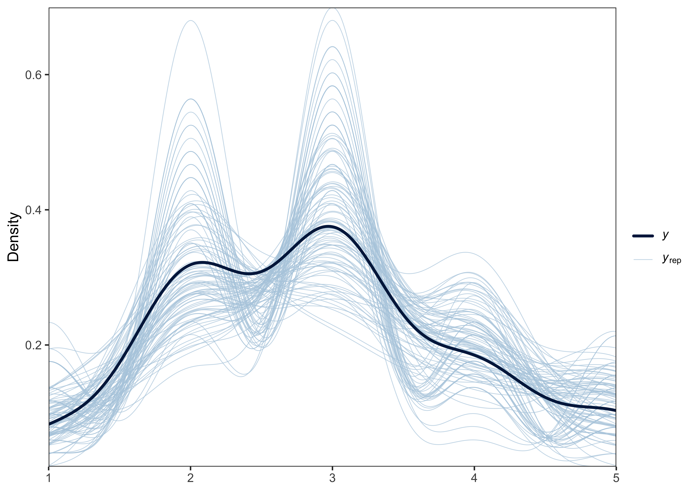
トレースプロットなどを確認すると、モデルの収束に問題はなかったようです。事後分布を確認すると、評定は3であることが多いようです。
それではモデルの指標を確認していきましょう。警告メッセージとして、ベイズ決定係数は順序尺度には不適切であることが述べられています。
model_performance(fit2)# Indices of model performance
ELPD | ELPD_SE | LOOIC | LOOIC_SE | WAIC | R2 | R2 (marg.) | Sigma
-----------------------------------------------------------------------------
-85.364 | 5.209 | 170.728 | 10.419 | 170.443 | 0.550 | 0.397 | 1.000